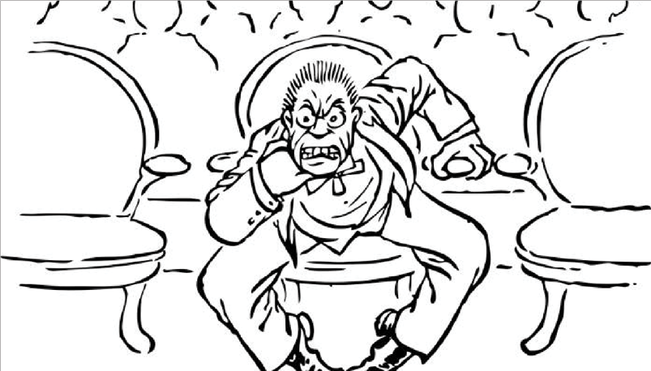
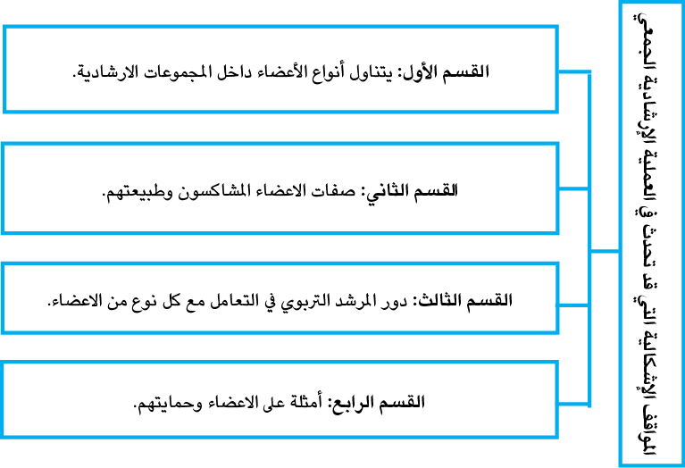

|
تزدادُ حاجةُ الأفرادِ والجماعاتِ إلى الإرشادِ النَّفسيِّ يومًا بعدَ يوم؛ نتيجةً للتقدُّمِ التِّكنولوجيّ الذي تشهدُه مختلفُ مناحي الحياة، ونتيجة للتغيُّراتِ والتقلباتِ الأُسريَّة والاجتماعيَّة والاقتصاديَّة المُصاحبةِ لذلك التَّغيُّر، وازديادِ القلقِ والتَّوتُّرِ المرتبط بكلِّ ذلك. وقد انعكستْ آثارُ تلكَ التَّغيُّراتِ على الأفرادِ، وبخاصّة طلبةُ المدارسِ، وبرزَتْ أعراضُ ذلك بأشكالٍ سلوكيَّةٍ تُعيقُ عمليَّةَ التَّعلُّمِ لديهم، وتجعلُ بعضًا منهم في حالةٍ منَ الاضطرابِ والقلقِ وعدمِ الاتزانِ الانفعاليّ، والبعضُ الآخر عُرْضَةٌ لأنْ يصابوا بالاضطراب، ممَّا جعلَ طلبة المدارس بحاجةٍ ماسَّةٍ إلى الخدماتِ التي يقدِّمُها الإرشادُ النَّفسيّ، وهي خدماتٌ وقائيَّةٌ ونمائيَّةٌ وعلاجيَّةٌ متنوَّعة، ولَمْ تَعُدْ مثلُ تلك الخدماتِ تَرَفًا تربويًّا، بل ضرورةٌ يجِبُ توفيرها للطلبةِ كافَّة في مختلف المراحل الدِّراسيّة. وقد جاءتْ هذه الوحدةُ لتوضِّحَ العديدَ منَ القضايا التي ترتَبِطُ بموضوع الإرشادِ النَّفسيّ في المدرسة؛ لتساعد المُرشدينَ في المدارسِ في أَداءِ عملِهم على أُسُسٍ علميَّة، كما جاءتْ عَوْنًا للطلبةِ الدَّارسينَ في الجامعات؛ لمساعدتِهم في التَّعامُل معَ الحالاتِ المُشاكِسَة منَ الأعضاءِ عند تشكيلِ المجموعاتِ الإرشاديَّة، ممَّا يُسْهِمُ في توفير البيئةِ السَّلِيمة لهم، للوصول إلى أعلى درجاتِ النُّمو.. |
|
|
تختلفُ مظاهر المُشاكسةِ من حيثُ نوعُها وشدَّتُها؛ فقد تكونُ بالكلامِ والثرثرةِ أمامَ الآخرين، والتَّذمُّر أمامهم، وقد تكون من خلالِ توجيهِ الكلام بطريقةٍ غيرِ مناسبةٍ أو قد تكون شكوًى. |

1.1 الهدف العام للوحدة الدراسيّة
|
عزيزيَ الطالب،يُتَوَقَّعُ منكَ بعدَ دراستِكَ للوحدةِ الدِّراسيّة الحاليّة، أنْ تتمكَّنَ مِنَ التَّعرُّفِ إلى كيفيَّة التَّعامُل معَ المواقفِ الإشكاليَّةِ في العمليَّة الإرشادية، من خلال كيفية التَّعامل مع: أ. المتحدِّث المُزمِن. ب. المُهَيْمِن. ت. الَّلاهي. ث. العضو المنقذ. ج. العضو السَّلبي. ح. العضو المُقاوِم. خ. العضو المُنْتَقم منَ القائد. د. العضو الصَّامِت. ذ. المشاعر الجنسيَّة. ر. التعامل مع الصُّراخ. ز. التعامل العَداء المتبادل بين الأعضاء. س. سؤال ترْكِ العضو للمجموعة. ش. التعامل مع الأعضاء المُتَحامِلِين ضيِّقي الأُفق. |
|
عزيزيَ الطالب،وفْقًا للهدفِ العامِّ للوحدة، وبعدَ دراستِكَ للوحدةِ الدِّراسيَّة، يُتَوَقَّعُ منكَ تحقيقَ النَّواتجِ الآتية: 1. تحديدَ أهمِّ المواقفِ الإشكاليَّة التي قد تحدُّثُ في العمليَّة الإرشادية الجمعيَّة. 2. القدرة على التَّعامُل مع المواقف الإشكالية التي قد تحدُّث في العملية الإرشادية الجمعيّة. |
3.1 الموارد والقراءات المساندة
|
عزيزيَ الطالب،أثناءَ دراستِكَ لهذه الوحدة، قد تَجِدُ أنَّكَ بحاجةٍ إلى مزيدٍ منَ التَّوضيحات والمعلومات حوْلَ ما جاءَ فيها منْ أفكارٍ ومفاهيمَ، فيمكنُكَ الرُّجوعُ إلى الموارد والمراجع التالية: 1- مصادر إلكترونية: ●صفحة المقرر الإلكتروني: الخطة والعروض التقديمية والوسائط المتعددة. ●الصفوف الافتراضية. -2 مصادر أخرى: النظرية والتطبيق في الإرشاد الجمعي، ترجمة: سهام ابو عيطة، مراد علي سعد. 2017. |
تتناول الوحدةُ السابعةُ موضوعاتٍ ومفاهيمَ أساسيّةً في المواقف الإشكالية التي قد تحدث في العمليَّة الإرشادية الجمعية، وذلك من خلال تناول ودراسة الموضوعات المرتبطة بأهداف الوحدة، والشكل الآتي يوضِّحُها:

|
هناك عواملُ كثيرةٌ تساعدُ على ترسيخ السُّلوك المشاكِس، فتحوِّلُ المسترشد من سيّءٍ إلى أسوأ، وتُعزِّزُ جوانبَ سلبيَّةً في شخصيّته، وتنعكس على المجتمع ككل. |
|
|
منَ العوامل التي تُعزِّزُ السُّلوكَ المشاكس للمسترشد: الأسرة، المدرسة، المجتمع، الحالة الشخصيَّة، إضافة إلى العوامل الذاتيّة. |

|
الشّخصيّة المشاكسة شخصيَّة غيرِ تقليديَّة، قد نصادفها في البيت، أو العمل؛ ممَّا يسبب لنا بعض المتاعب. هذه الشخصيَّة لها تأثير قويٌّ على البيئة المحيطة بها |
|
كيف تؤثِّرُ المجموعةُ في تعديلِ سلوكِ العضوِ المُشْكِل؟ |
يعَدُّ المرشدُ في المجموعاتِ الإرشاديَّة القائدَ والمسيطرَ على سيْر الجلساتِ الإرشاديَّة، ومنَ المُتوقَّع أنْ يكونَ ضمنُ أفرادِ المجموعةِ أنواعًا متعدَّدةً منَ المُسترشدينَ، لذا، على المُرشدِ أنْ يكونَ على وعيٍ بهذه الأنواع، ولديه منَ الخبرةِ والمهارة ما يمكنُه منَ التَّعامُل معها، وعنْدَ قيادةِ المجموعاتِ لا بُدَّ أنْ يكونَ القائدُ مستعدًّا للتَّعامُل مع هذه المواقف الاشكالية، وفي هذه الوحدة، سوف نتعرَّفُ إلى العديدِ مِنَ المشكلاتِ الشَّائعةِ التي تظهر، ونقدِّمُ أمثلةً لتوضيحِ بعضِ المهاراتِ والأساليبِ للتَّعامُل معِ هذه المواقف، لقد حدَّدْنا 13 مشكلةً شائعةً على النَّحوِ التالي:
المُتحدِّث المُزْمِن
هو الشخصُ الذي يتحدّثُ بإفراط وباستمرار،دونَ مراعاةٍ لمدى اهتمامِ الآخرين أو حاجاتهم إلى المشاركة في الحديث، ليسَ مِنَ الصَّعبِ تحديدُ المُتحدِّثِ المُزمنِ، إذ يَتَّصِفُ - في الغالبِ- بأنَّه يهيمُ على وجهِه دائمًا، ويتَّصف أيضاً بالتَّكرار، ويتميّزُ بعدمِ الوعي بالإشاراتِ الاجتماعيّة التي تدلُّ على رغبةِ الآخرينَ في التحدُّثِ أو إنهاءِ الحوار.
إنَّ الأعضاءَ الآخرينَ الذين لديهم مشكلاتٌ يريدونَ الحديثَ عنها - يمنعُهم مِنْ ذلكَ وجودُ المتحدِّثِ المُزمِن، قد يكون التّحدُّثُ المزمنُ ناتجًا عن عواملَ شخصيّة، مثلِ الحماس الزائد أو الحاجة إلى التعبير عن الأفكار تعبيرًا مطوَّلًا، وقد يرتبطُ في بعض الحالات باضطراباتٍ نفسيّةٍ اجتماعيّة، مثلِ القلقِ، أو اضطراب نقص الانتباهِ، وفَرْطِ الحركة.
وقد يتسبّبَ من الناحية الاجتماعيّة، في فقدانِ انتباهِ المُستمعين، أو إحراجهم، وقد يَجِدُ صعوبةً في بناءِ علاقاتٍ متوازنةٍ؛ بسبب عدمِ مراعاته لمبدأ التَّبادُل في المحادثة، ولذلك، يُنصحُ الأشخاص الذين يميلونَ إلى التحدّثِ بإفراطٍ بالانتباهِ إلى ردودِ فعل الآخرين، او يفقدونَ الاهتمامَ بالأحداث، أو يشعرونَ بالإحباطِ والغضبِ تجاهَ العضوِ الثّرثار، فإنَّ هذا المتحدِّثَ المُزمنَ يقعُ ضمنَ ثلاثةِ أنواع مختلفة:
أ. العضو العصبي: يتحدَّث هذا العضو؛ ليخفيَ مشاعرَ العصبيَّة، أو كوسيلةٍ لضبط الذَّات، هذا الشخصُ مِنَ السَّهلِ التَّعرُّفُ إليه؛ إذ إنَّه أوَّلُ شخصٍ يُجيبُ عن الأسئلة التي يطرحُها القائد، وأوَّلُ مَنْ يتطوَّعُ لعملٍ، أيْ، مَهَمَّة، نظراً لأنَّ العضوَ العصبيَّ يتحدَّثُ للتَّخفيفِ منَ القلق، فإنَّه سوف يتحدَّثُ دائماً، ما دامَ القائدُ يسمحً له بذلك.
ب. الهائم على وجهِهِ: يُهيْمِنُ على المناقشات؛ لأنَّه – ببساطةٍ- شخصٌ ثرثارٌ، وليس على وعيٍ بتأثيرِ هذه الهَيْمَنة على الآخرين، ومِنَ السَّهلِ التَّعرُّفُ إلى هذا الشَّخصِ، كأنَّه يروي قصصًا طويلة، وأحياناً، يكرِّرُ نفسَه، غالباً، ما تكون هذه القصصُ تافهة، وليس فيها معنًى قيّمًا للآخرين.
ت. الاستعراضيّ السَّاعي للفت الانتباه: هو شخص ثرثارٌ؛ لأنَّه لا يشعرُ بالأمانِ أو الاستقرارِ ويريدُ أنْ يؤثِّرَ في قائدِ المجموعة، أو في الآخرين، أو فيهم جميعاً، وهذا السَّاعي للفْتِ الانتباهِ يبدو أنَّه يحاولُ إظهارَ ما يعرفُهُ للآخرين، وعندما يفعلُ ذلك، فإنَّه يُجيبُ عن كلِّ الأسئلة، ويطرَحُ أسئلةً لا صِلَةَ لها بالموضوع في محاولةٍ لِجَذْبِ انتباهِ القائدِ إليه، وقد يقدِّمُ نصيحةً غيرَ مُغْرِيَةٍ للأعضاء الآخرين في المجموعة، غالباً، ما يَسْتَاءُ الأعضاءُ مِنْ هذا، ويَبغضونَ هذا النوعَ مِنَ الأعضاء، ونشيرُ - هنا - إلى أنَّ المشكلةَ معَ السَّاعي للفْتِ الانتباهِ أنَّه يُبْعِدُ المجموعةَ بسرعةٍ عنِ الهدفِ المَنشود.
تدريب ( 1 )

|
ما هي انواع العضو المزمن ؟ |
هناكَ طرقٌ أو إستراتيجيّاتٌ عديدةٌ وفعّالةٌ للتَّعامُل مع العضو الثرثار، بطريقة تحافظُ على الاحترام المتبادل، وتحقيق توازن الحوار، فعند إدراكِ أو التَّعرُّفِ إلى هذا العضو:
1. ينبغي للقائد عملُ ثنائيَّات، أيْ، التحدُّث معه على انفراد، خارج نطاق اللقاء العامّ؛ لشرح أهمية الاستماع والتناوب في الحديث، وذلك بأسلوبٍ لطيف.
2. استخدامُ إستراتيجيَّةِ الشَّريكيْنِ في المجموعة، يتمُّ تشكيل زوجٍ من المشاركِين، يتفقانِ على توجيه الحوار بشكلٍ يُخفف من تأثير الشخص الثرثار دون اللجوء إلى المواجهة المباشرة، ذلكَ بأنْ يخاطبا المجموعةَ على أملٍ أنْ يسمعَ العضو الثرثار الرسالة منهما، أو يَسْعَيَا في طلبِ التَّغذية الراجعة من الأعضاء، فمخاطبة العضو الثرثار مخاطبة مباشرة قد تؤدّي إلى إحراجه، أو تأجيج التوتر، وهذا يتطلب من الشريكين التنسيق االمسبق، والتدخُّل اللطيف، وتوزيع الأدوار في الحوار، وخلق بيئة داعمة.
3. هناك استراتيجياتٌ أخرى، يمكن توظيفها في هذا السياق، منها: تغييرُ موضوعِ الحوارِ بلطفٍ، واستخدامُ أسلوبِ الحوارِ التَّفاعليّ، وتحديدُ إطارٍ زمنيٍّ أو ترتيبٌ معيّنٌ للتَّحدُّث، واستخدامُ لغةِ الجسد، والإشاراتِ اللفظيّة.
التَّعامُل معَ العضوِ الثَّرثار في المجموعة الإرشادية:
ـفي بداية تشكيل المجموعة، يُريدُ القائدُ أنْ يكبحَ حديث ذلك الهائم على وجهه، ولكنْ - في الوقت نفسِه - لا يبدو أنه ناقدٌ له.
ـلذا، يقرِّرُ القائدُ تقديمَ رسالةٍ للمجموعةِ كلِّها من خلال النظر إلى الجميع أثناء الكلام.
ـعدم النظر الى المتحدث المزمن اثناء حديثة.
ـتقديم تغذية راجعة لان القائد يعتقد ان الاعضاء يريدون مواجهة العضو الثرثار.
ـالحديث الى العضو الثرثار بعد الجلسة مباشرة او قبل الجلسة التالية.
1.2 العضو المهيمن Dominant member :
هو العضوُ الذي يحاولُ أنْ يَفرضَ سيطرتَه على المجموعة، هذا العضوُ يختلفُ عن المتحدِّثِ المُزمنِ؛ لأنّه يُريدُ أنْ يُديرَ الأشياءَ ويسيطرُ عليها، هذا النوعُ منَ الأعضاءِ شائعٌ في المواقع العلاجية للنزلاء، وفي مجموعات المدرسة، ففي مجموعات التَّعليم، أوِ المناقشة، أوِ المَهامّ، وهذا النوعِ من الاعضاء له وجوده، ولذلك، ينبغي للقائد أنْ يُجرِّبَ بعضَ الأساليبِ المختلفة المقترحة للتَّعامُلِ معَ المتحدِّث المُهَيْمِن، ومع ذلك، يحتاجُ القائدُ - في الغالب - إلى مقابلة هذا النوع من الأعضاءِ - بشكل خاص- لمناقشة سلوكه في المجموعة، أحياناً، يمكنُ استخدامُ هذا النوع من الأعضاء بوصفه مساعدا، أو قد يأخذُ دورًا يجعلُه يظهُر على أنَّه فريد، وفي أحيانٍ أُخرى، قد يُطْلَبُ منه - بسببِ سلوكِه — تركَ المجموعةِ.
2.2 المُشَتِّتُ أوِ الَّلاهي The Distractor
هو العضوُ الذي إمَّا أنْ يسعى لجذبِ الانتباه، أو إلى تجنُّبِ النَّظر إليه؛ ولتحقيقِ هذا، فهو يحاولُ إبعادَ المجموعةِ عن المَهَمَّة، وذلك بعرْضِ موضوعاتٍ لا صلةَ لها بالموضوعِ الأصليِّ للمجموعة، أو بطرْحِ أسئلةٍ لا صلةَ لها بالموضوعِ أيضا، بعضُ هؤلاءِ الأعضاءِ يتسبَّبونَ في الضَّوْضاءِ أو يتحرَّكونَ داخلَ المجموعة؛ بغرَضِ إلْهاءِ الآخرين، هذا الشَّخصُ موجود - في الغالب - في مجموعاتِ المدرسةِ والنُّزلاء، وفي المجموعات التي يكون فيها متطوِّعون، أحياناً، يكونُ مِنَ الصَّعب التَّعامُلُ معَ هذا العضو؛ لأنَّه لا يحاول عن قصدٍ إنهاءَ المجموعة.
3.2 العضو المنقذ The Rescuing Member
الإنفاذُ محاولةٌ مِنَ العضوِ للتَّخفيفِ مِنَ المشاعرِ السَّالبة التي يَمُرُّ بها عضوٌ آخرَ في المجموعة، عندما يُصبحُ العضوُ حزيناً، يحاولُ الأعضاءُ الآخرون- في الغالب - تسليتَهُ بعباراتٍ، مثلِ:» الآن، لا تقلق، كلُّ شيءٍ سوف يكونُ على ما يُرامُ، أو ستكونُ الأمورُ في مسارِها الطَّبيعيّ.
ان محاولة الانقاذ من العضو المنقذ يمكن ان تمنع العضو المتألم والحزين من حل مشكلته.
نشاط ( 1 )
|
عضو يصرخُ، أو عضو مهيمنٌ، أو عضو يحاولُ الانتقامَ من القائد. أيّها أصعبُ عليك، في التعامُلِ معه؟ ولماذا؟ |
4.2 العضو السَّلبي The Negative Member
العضوُ السَّلبيُّ هو الذي يشكوُ- دائماً - منَ المجموعةِ أو يختلفُ معَ الأعضاءِ الآخرينَ في المجموعة، فالأعضاءُ السَّلبيُّونَ إشكاليّونَ؛ بسببِ كون اتجاههم، وسلوكهم يتعارضُ مع هدف القائد، والمتمثِّلِ في إشاعةِ جوٍّ إيجابيٍّ داخلَ المجموعة، فإذا كانَ عضوُ أو اثنانِ سلبيَّانِ، ويشكوانِ، فإنَّ الأعضاءَ الآخرينَ سوف ينضمُّونَ إليهما، ويُصْبِحونَ سلبيِّين، أيضاً، قد تُصبحُ جلساتُ المجموعة جلساتِ مظالمَ، ولن يتحقَّقَ ما يصبو إليه الأعضاءُ منها.
هناكَ ثلاثُ إستراتيجيَّاتٍ مُمكنة للتَّعامُل معَ العضوِ السَّلبيّ:
1. التَّحدُّثِ إلى الشَّخص خارجَ المجموعةِ، ومحاولة التَّعرُّفِ إلى سببِ سلبيَّتِهِ، من الممكن، أنْ يطلبَ القائدُ مشاركةَ العضوِ في أنْ تكونَ المجموعةُ منتجةً، في بعض الأحيان، قد يحتاجُ هؤلاءِ الأعضاءُ إلى اهتمامِ القائدِ ، أو إلى دوٍر يلعبونَه داخلَ المجموعة، ومن خلالِ التَّحدُّثِ إلى هذا العضو، فإنَّ القائدَ يمكنُه تقديمَ دورٍ إيجابيٍّ للعضوِ السَّلبيّ.
2. التَّعرُّفِ إلى الحلفاءِ، أعضاءِ المجموعةِ الإيجابيّين في المجموعة، وتوجيه أسئلةٍ وتعليقاتٍ لهم، إنَّ جعلَ هؤلاءِ الأعضاءِ يتحدَّثونَ أكثرَ منَ الأعضاءِ السَّلبيّين يمكنُ أنْ يشيعَ جوًّا إيجابيًّاً داخلَ المجموعة.
3. عند طرحِ سؤالٍ على المجموعة، وتجنُّبِ التَّواصُل العيْنيّ معَ الشَّخص السَّلبي حتى لا تُغريه بالكلام.
تدريب ( 2 )
|
اذكر استراتيجيات التعامل مع العضو السلبي. |
ينبغي للقادة - عادة - تجنُّبُ مواجهةِ العضوِ السَّلبيّ أمامَ الأعضاءِ الآخرينَ في المجموعةِ؛ فقد تؤدّي إلى نتائج سلبيّة؛ مثل الشعور بالانتقاص، والإحراج، أو فقدان الثقة، ممّا يؤثّر في ديناميكيّة المجموعة، فقد تتحوَّلُ إلى جدلٍ ثنائيّ سلبيّ بين القائد والعضو السلبي، وهذا لن يكونَ مفيداً للأعضاء الآخرين في المجموعة، لو وجد القائدُ نفسُهُ في أيِّ نوعٍ منَ المواقفِ الخلافيّة الجدليّة، فمن الممكن، أنْ يحول التَّركيزُ إلى شخصٍ آخرَ، أو موضوعٍ آخرَ، ثُمَّ يُتَحَدَّثُ إلى العضو السَّلبيّ في نهاية المجموعة، وينصحُ – غالبًا- بالتّعامُلِ مع الأعضاء السلبيّينَ بشكلٍ فرديٍّ أولا، إلا إذا كانتِ المشكلةُ تتطلّبُ تدخُّلًا جماعيّا؛ للحفاظِ على بيئةٍ إيجابيّةٍ وفعّالةٍ داخلَ المجموعة.
إنَّ، مَنَ الأهمِّيَّةِ، تذكُّرَ أنَّه قد يكونُ في المجموعةِ- في بعضِ الأحيان- عضوٌ أو اثنانِ سلبيَّانِ. وهذا ينطبِقُ على بدايةِ المجموعة، وخصوصاً إذا كانتِ المجموعةُ إجباريَّةً، وفي كثير منَ الأحيانِ، تقلُّ السَّلبيَّة عندما تُصبحُ المجموعةُ مشوقةً جذّابةً مثيرةً للاهتمام. ومع ذلك، قد تكونُ هناك أوقاتٌ يظلُّ فيها العضوُ سلبيًّا، بغضِّ النَّظرِ عمَّا يفعلُه القائد، وفي الحالاتِ المتطرِّفة، قد يكونُ، مِنَ الضَّروريِّ، سؤالُ العضوِ أنْ يتركَ المجموعةَ أو يجلسَ هادئًا، غالبًا، ما يكرِّسُ القائدُ كثيراً من الوقتِ في محاولة العملِ معَ العضوِ السَّلبيِّ، في حين، يتجاهَلُ الأعضاءَ المُهتَمِّينَ بالمجموعة.
نشاط ( 2 )

|
إذا كنتَ قائدًا لمجموعةٍ وصادفْتَ عضوًا مهيمن. صِفْ خطَّةَ تدخُلِكَ. |
5.2 العضو المقاوم The Reistant Member
بعض الاعضاء يقاومون لأنهم اجبروا على الدخول في المجموعة، وهم يعتقدون انهم اذا قاوموا سوف يعطون الفرصة للتعبير عن عضبهم .
هناك اربعة انواع من الاعضاء المقاومين.
1. لا يعرف سبب انضمامة للمجموعة ويعبر عن ذلك في الجلسة الاولى.
2. لا يتحدث كثيرا ويضع يداة بشكل متقاطع.
3. يتحدث عن امور لا تتعلق بموضوعات تهم المجموعة.
4. لا يقاوم المجموعة وانما يقاوم التغيير في نفسه.
إنَّ لدى بعضِ الأعضاءِ توقعات سلبية عن فعاليّة المجموعة؛ إذ يعتقدُ هؤلاءِ الأعضاءُ بأنَّ المجموعةَ لن يكونَ لها أيُّ فائدة، ولذا، فهُمْ يرفضونَ المشاركة التَّعاونيّة. فإذا ما واجهَ القائدُ عضوًا مُقاومًا،فهناك إستراتيجيّات أساسيَّة هي :
استراتيجيّة التّفهُّم والحوار الشخصيّ: بدلًا من مواجهةِ العضوِ المقاوم بشكلٍ مباشَرٍ أمامَ المجموعة، يمكنُ للقائد أو المشرف التحدُّثُ معه على انفراد بعد الجلسة؛ لفهمِ أسبابِ مقاومته، فقد تكونُ مقاومتُه ناتجةً عن مشاعرِ عدمِ الارتياح، أو الخوفِ منَ التَّغيير، أو عدمِ اقتناعه بأهداف المجموعة، فمن خلالِ الحوارِ الهادئِ والاستماع النَّشط، والإرشاد الفرديّ يمكنُ التَّوصُّلُ إلى حلولٍ تعزِّزُ شعورَهُ بالأمانِ والانتماء.
إستراتيجية إشراكه في الحلول والمسؤوليات: أن يُعطى العضوَ المقاومَ دورًا أو مسؤوليّة في المجموعة؛ فقد يشعرُ بأنّه منخرطٌ ومتفاعلٌ تفاعلا إيجابيّا مع المجموعة، وبذلك، يحاول القائدُ مساعدتَه للعملِ؛ ممَّا يجعلُه جزءًا من العمليّة، بدلًا من أن يكونَ في موقفٍ معترضٍ.
طرق أخرى للتعامل مع العضو المقاوم:
هناك طريقةٌ أخرى للتعامل مع العضو المقاوم في العديد من المجموعات، وهي التركيز على العضو المقاوم بطريقة غيرِمباشرة، بمعنى، قد يعمل القائد مع عضو أكثرَ رغبةً في المشاركة؛ بهدف مساعدة العضو المقاوم في تعلُّم شيءٍ ما بالمشاهدة. إنّ إجراءَ العلاجَ النَّفسيّ بهذه الطريقة يُبْعِدُ التَّركيزَ المباشَرَ عن العضو المقاوم.
تدريب ( 3 )
|
اُذْكُرْ أربعَ نماذجَ للأعضاءِ المقاوِمين، ثمّ بيِّنْها؟ |
مثال Example:
●تتحدّثُ هدى فتقول: إنَّها على وشكِ أنْ تكونَ أُمًّا، وأنْ يكونَ لها حياةٌ مهنية، وتذكُرُ أنَّها تريدُ الاستمرارَ في حياتِها المِهْنِيَّةِ، ولكنْ لا تعرفُ ماذا تفعلُ معَ الأطفال أثناءَ اليوم.
●فاطمة: مِنَ الممكنِ، أنْ تَتْرُكيهم في مركزٍ للرِّعاية.
●هدى : نعم، ولكنْ لا أعرفُ ما إذا كانَ هذا المكانُ سوف يكونُ مكانًا جيِّدا لهم.
●ألاء: هل لدى شركتِكِ برنامجًا لرعاية أطفالِ الموظَّفين؟
●هدى: نعم، ولكنِّي لا أحبُّ بعضَ الأطفالِ، والعاملينَ هناك.
●سُميَّة: هل لديكِ أقاربٌ قريبونَ منكِ، يمكنُ أنْ يرعوهم؟
●هدى: نعم، ولكن لا أحبُّ أنْ أفرضَ نفسي على أحدٍ.
ففي مثلِ هذه الحالةِ، ينبغي أَنْ يُدرِكَ القائدُ أنَّ العضوَ مقاومٌ لسماعِ المقترحات، ومنَ الطُّرقِ الجيدة للتعامل مع المقاومة قد تكونُ بأنْ يقولَ القائدُ شيئًا ما مثلَ:
القائد: هدى، أعتقدُ أنَّنا نفهمُ المشكلة، ولكنْ لسْتُ متأكِّدًا منَ الكيفيّة التي يمكِنُ لنا بها مساعدتَكَ -هنا - في المجموعة، ما الذي يُفيدُكَ؟
6.2 العضو الذي يحاول «الانتقام من القائد»
The Member Who Tries To “Get The Leader
عندَ قيادةِ مجموعةٍ ما، يحتاجُ القائدُ إلى أنْ يكونَ مستعدًّا لما نسمِّيه الانتقامَ منَ القائد، وهذا يحدث عندما يحاولُ العضو تخريبَ ما يقولُه أو ما يفعلُه القائد في المجموعة، إنَّ الانتقامَ منَ القائدِ يمكِنُ أنْ يأخذَ شكلَ عدمِ الاتَّفاق مع القائد، عدمِ اتِّباع تعليماته، وطرح أسئلةٍ لا يُجابُ عنها؛ ليظهرَ القائد في شكلٍ سيّءٍ، أو الحديثِ إلى آخرين أثناءَ حديثِ القائد، هذا العضوُ يختلفُ عنِ العضو السَّلبيّ في أنَّه يُعادي القائد.
هناكَ أسبابُ عديدة ٌتجعلُ العضوَ يريدُ الانتقامَ من القائد، من الممكن - في الغالب - إرجاع هذه الأسباب إلى شيءٍ قالَه أو فعلَه القائدُ؛ تسبَّب في مضايقةِ أو ارتباكِ هذا العضو.
فيما يلي قائمةٌ ببعضِ سلوكيَّاتِ القائدِ، التي قد تجعلُ العضوَ يريدُ الانتقامَ مِنَ القائدِ:
●وضعُ أحدِ الأعضاءِ في ورطةٍ أمامَ الأعضاءِ الآخرين.
●مقاطعةُ أحدِ الأعضاءِ مقاطعةً غيرَ مناسبةٍ أو مناسبةً.
●عدمُ إعطاءِ العضوِ الفرصةِ للحديث أو الفشل في إدراك أنَّ العضوَ يُريدُ التَّحدُّثَ.
●إخبارُ العضوِ بأنَّ المجموعةِ سوف تعودُ إلى قضيتِه أو مشكلتِه، ولا يَحْدُثُ ذلك.
●السَّماحُ لأعضاءِ المجموعةِ بتقديم التَّغذيةِ الرَّاجعةِ السَّلبيَّةِ لعضوٍ بعيْنِه.
●عدمُ القدرةِ على ضبط المجموعة.
●تحويل المجموعة الى مجموعة ممله بسبب نقص مهارة القائد.
وعلى الرَّغم مِنْ أنَّ القائدَ هو السَّببُ الرئيسُ - في الغالب- وراءَ سلوكِ الانتقامِ منَ القائدِ في المجموعة، فقد تكون هناكَ أسبابٌ ممكنةٌ أُخرى:
●الأعضاءُ الذين لم يأتوا إلى المجموعة من تِلقاءِ أنفسِهم، يُخْرِجونَ إحباطَهم، ويُصبُّون غضبَهم على القائد.
●أحياناً، يُسْقِطُ الأعضاءُ مخاوفَهم- مِنْ كونِهم في المجموعة- على القائد.
●الأعضاءُ الذين يناضلونَ في علاقاتِهم مع رموزِ السُّلطة، قد يحاولونَ إفسادَ جهودِ القائد.
●قد يريدُ الأعضاءُ - في بعض الأحيان - أنْ يكونوا هم المفضَّلينَ لدى القائد، ويتصرَّفونَ بغضبٍ إذا ما شعروا أنَّهم ليسوا كذلك.
قد يكونُ أوّلُ شيءٍ ينبغي للقائدِ عملُهُ عنْدَ إدراكِ أنّ أحدَ الأعضاءِ يحاولُ الانتقامَ منه، هو تحويلُ التَّركيزِ عن أيِّ صراعٍ بينَه وبين العضو.
أمثلة Examples :
●القائد: أوَدُّ أنْ نبدأَ جلستَنا اليومَ بالحديثِ عن: كيفَ يؤثِّرُ الشُّربُ في الحياةِ الأُسَرِيَّة؟
●علي: لماذا أنتَ- دائماً - الذي تَختارُ الموضوع ؟ أعتقدُ أنَّ هذه مجموعتنا. أخبرْني!
●القائد: - يتحدَّثُ بصوتٍ هادئٍ- في حين، يتواصَلُ عيْنيًّا معَ كلِّ الأعضاءِ، ولا يتواصَلُ أكثرَ مع عليٍّ؛ حتى يحاولَ تثبيطَ عليٍّ عن أيِّ تعليقاتٍ أُخرى.
●دعوني أوضِّحُ لكم كيفَ أتَّخذُ قرارًا بشأنِ الموضوعات، أيضاً، اِعْلَمُوا أنَّه إذا كانتْ لديكم موضوعاتٌ أو شيءٌ ما تريدونَ الحديث عنه، دَعوني أَعْرفْ ذلك. هناك عددٌ من الموضوعاتِ يمكنُ أنْ نغطيَها.
●القائد: أوَدُّ أنْ يغمِضَ كلٌّ منكم عينيْهِ، ويحاولُ أنْ يتخيَّلَ.
●سامي: - مُقاطعاً- هل ستقومُ بعملِ تمرينٍ خياليٍّ آخرَ من تلك التَّمارينِ السَّخيفة؟ ما فائدةُ هذه التَّمرينات؟
القائد: سامي، لو سمحتَ اجلِسْ هادئاً، للأعضاء الآخرين، أوَدُّ أنْ يغمِضَ كلٌّ منكم عينيْهِ، ويحاولُ أنْ يتخيَّلَ أنَّه حيوانٌ.
التَّعاملُ الإرشاديّ معَ العضو الذي يحاولُ « الانتقام من القائد»
حتى يتجنَّبَ القائدُ محاولةَ العضوِ الانتقامَ منه، فإنَّ عليه محاولةَ أنْ يفهمَ سببَ استهدافِ العضو له، في الغالب ، فإنَّ القائدَ يعرفُ سببَ حدوثِ ذلك، وإذا كانَ منَ الممكن حلُّ المشكلةِ من خلال أساليبَ مثلِ الانتباهِ أكثرَ إلى العضو، والعودة إلى قضيةِ هذا العضوِ مرَّةً أُخرى، أو التَّأكُّد مِنْ وضعِ العضوِ في ورطةٍ، إذاً، ينبغي أنْ يقومَ القائدُ بهذا التَّصحيحِ، أما إذا كانَ القائدُ لا يفهمُ سببَ استهدافِ العضو له، فقد يختارُ أنْ يتزاوجَ في ثنائيّةٍ معَ العضو، أو يتحدَّثَ إليه في نهايةِ الجلسةِ؛ ليرى ما إذا كانَ يستطيعُ الحصولَ على بعضِ المعلومات، قد يقولُ القائدُ شيئًا ما، مثلَ: يبدو أنَّ هناكَ شيئًا ما بيني وبينك، هل قلتُ شيئًا تسبَّبَ في مضايقتك؟
|3| التّعامل مع الصَّمت - Dealing With Silence:
هناك صمتٌ منتجٌ وصمتٌ غيرُ منتجٍ في المجموعة، فالصَّمتُ المنتجُ يحدُث عندما يقومُ الأعضاءُ بالتَّجهيز الدَّاخليّ لشيءٍ ما قبل أو في المجموعة، أمَّا الصمتُ غير المنتج، فيحدُثُ عندما يكونُ الأعضاءُ بسبب الحيرة بشأن ما يقولون أو الخوف منَ التَّحدُّث، أوبسبب الشُّعور بالمَلَلِ عندما تكونُ المجموعةُ صامتةً، ينبغي أنْ يسألَ القائدُ نفسَهُ عمَّا إذا كانَ الصمتُ منتجاً، وهذا يَظهرُ للقائدِ من خلال ملاحظةِ ردودِ أفعالِ الأعضاءِ أثناءَ جلوسِهم هناك، وأيضاً من خلال التَّفكير
فيما يحدُثُ في المجموعة إذا بدا على الأعضاءُ التَّفكيرَ بعمقٍ نتيجةً لعمل مكثف، فينبغي أنْ تُعطى الفرصةُ للصمت.أحياناً، قد يسمحُ القائدُ بأنْ يستمرَّ الصمتُ لمدة 2-1 دقيقة، إذا كان هذا الصمتُ منتجاً، قد يختارُ القائدُ الانتظارَ حتى يقومَ شخصٌ آخرَ بكسرِ الصَّمتِ، أو قد يختارُ هو كسر الصمتِ كقوله: شيئًا ما،» يبدو أنَّ كثيرًا منكم يفكِّرونَ فيما حدث، أودُّ منكم التَّشارَك بالأفكار». ومع ذلك، إذا كان الأعضاءُ صامتين؛ بسببِ عدم الاهتمام، إذاً، يصبحُ الصَّمتُ إشارةً للقائدِ بأنْ يغيِّرَ التَّركيزَ أو يخاطبَ المجموعةَ بشأنِ نقصِ الاهتمام.
في بعض الأحيان، يكونُ الأعضاءُ صامتين في بداية الجلسة؛ لأنَّه لم يتم إحماؤُهم للجلسة. فمن الخطأِ أنْ يجعلَ القائدُ الصَّمتَ يَحْدُثُ في بداية الجلسةِ؛ لأنَّ الأعضاءَ يحتاجون إلى مناقشةِ أو نشاطٍ يساعدُهم على البِدء.
وإذا بدا على الأعضاءِ العصبيَّةُ من خلال نظراتهم، والحيرة لعدم معرفتهم بمَنْ سيقومُ بالبدء، فإننا نرى أنْ يقومَ القائدُ بكسرِ الصَّمتِ بعد 15-20 ثانية، ويشعرُ بعضُ الخبراءِ بالاختلافِ في شأنِ هذا الموضوع؛ إذ يدعونَ المجموعة تجلسُ في صمتٍ لمدة 5-10 دقائقَ، اعتقاداً منهم أنَّ على الأعضاء أنْ يكونوا مسؤولين عمَّا يَحْدُثُ في المجموعة ، منَ الأفضل، كسِرُ القائدُ الصَّمتَ بسؤالٍ، أو جوْلةٍ، أو تمرينٍ له صلةٌ بالموضوعِ، أو يكون مُنتجاً.
عندما يشعرُ القائدُ بأنَّ الصَّمتَ منتجٌ، ويقومُ أحدُ الأعضاءِ بالبدءِ في التَّحدُّثِ، فمِنَ الممكنِ، أنْ يقولَ لذلك العضو: دَعْنَا ننتظرُ بضعَ دقائقَ، فيما يبدو أنَّ الناسَ يفكِّرون.
نشاط ( 3 )
|
فسِّرْ ذلك. يمكنُ أنْ تخلقَ العضويَّةُ الصَّامتةُ شعورًا بالمساءلة معرفة أنَّ شخصًا ما يُراقِبُ بصمتٍ، يمكنُ أنْ يُشَجِّعُ الأعضاءَ النَّشطينَ على التَّصرُّفِ بطريقةٍ أكثرَ إيجابيّة وبنَّاءة. |
تدريب ( 4 )
|
ما الفرقُ بين الصَّمتِ المُنْتِجِ والصَّمتِ غيرِ المُنتج ؟ |
|4| التَّعامُل معَ المشاعرِ الجنسيَّة Dealing With Sexual Feelings
في بعض الأحيان، ينجذِبُ أعضاءُ المجموعةِ للحديثِ في الموضوعات الجنسيَّة، خصوصاً في مجموعات العلاج النَّفسيّ، والنَّمو الشَّخصيّ، والدَّعم، ولا بُدَّ أنْ يضعَ القائدُ في الاعتبارِ أنَّ الجاذبيَّة الجنسيَّة يمكن أنْ تَحْدُثَ، بل سوف تَحْدُثُ، ليس لدى القائدِ ما يفعلُه حِيالَ هذا، وفي الحقيقة، لا يريدُ القادةُ أنْ يعملوا كما لو كانوا مُشَرِّعينَ أخلاقيِّينَ، قد يضع بعضُ القادةِ قاعدةً أساسيَّةً ألَّا يكونَ هناكَ روابطٌ بينَ أعضاء خارج المجموعة، وقد لاحظنا أنَّ الأعضاءَ يفعلونَ ذلك، بغضِّ النظر، عن وجودِ قاعدةٍ، لذلك، فإنَّ أفضلَ إستراتيجيَّةٍ هي الحديثُ عن كيف يصبحُ ذلك مشكلة؟
في بعض الأحيان، يكوِّنُ الأعضاءُ علاقاتٍ لا تتداخَلُ معَ المجموعة، وفي أوقاتٍ أُخرى، فإنَّ العلاقاتِ الخارجيَّةَ تتسبَّبُ في مشكلاتٍ، فإذا ما ظَهَرَ موقفٌ ، مثلُ أنْ يُعطي اثنينِ منَ الأعضاءِ موعداً للقاءِ ، أو يُظْهرُ أحدُ الأعضاءِ الاهتمامَ بعضوٍ آخرَ لا يبادله هذا الاهتمام، فقد يختارُ القائدُ أنْ يتحدَّثَ تحدُّثًا فرديًّا مع هذا الشَّخص، أو هؤلاءِ الأشخاصِ لإيجادِ حلٍّ للمشكلة، وفي أوقاتٍ أخرى، يمكِنُ عرضُ القضيةِ على المجموعة، خصوصاً، إذا ما شعَرَ الأعضاءُ الآخرونَ بأنَّ العلاقةَ تُفْسِدُ المجموعةَ بطريقةٍ أو بأخرى، قد لا يكونُ منَ السَّهلِ التَّعامُل معَ هذا، ولكنْ لا ينبغي أنْ يتجاهَلَ القائدُ هذه المواقف، في بعض الأحيان، قد يكونُ استبعادُ أحدِ الأعضاءِ منَ المجموعةِ هو الحلُّ الأفضل.
|5| التَّعامل معَ البكاء أو الصراخ Dealing With Crying
قد يصرخُ الأعضاءُ في أيِّ وقتٍ أثناءِ المجموعة، فقد يصرخونَ عندما يتحدَّثون، أو يتحدَّثُ شخصٌ آخرَ عن موضوعاتٍ مثلِ: تقديرِ الذَّاتِ المُنخفض، الإساءة، موت حبيبٍ، أو ( انفصال ) الوالديْن، فقدان وظيفة، مرض، أو الانتقال من مكانٍ إلى آخر، قد تتراوح الدُّموع من رطوبةٍ في العين، إلى انتحابٍ لا يمكنُ السّيطرةُ عليه، وقد يُشيرُ إلى مدى الانفعالاتِ منَ الحُزنِ إلى الخوْف، الغضبِ، الاكتئابِ، الفراغ، الحِيرة، القَلق، وحتَّى السَّعادة.
بعضُ القادةِ الذين يلاحظونَ أنَّ العضوَ يبدأ في الصراخ يحاولونَ على الفوْرِ مساعدةَ العضوِ فيما يشعرُ به من أَلَمٍ قبل أنْ يكونَ هناكَ عقدُ اتِّفاقٍ بينهم. وبين ذلك العضوِ لعملِ ذلك، في الغالب، لا يكونُ الأعضاءُ مستعدِّينَ لمناقشةِ ما يشعرونَ به، لذا، عندما يحاولُ القائدُ مساعدةَ أولئك الذين ليس لديهم استعدادٌ للتشارك، فإنَّ العضوَ يشعرُ بالضغوط، وهذا قد يؤدِّي إلى الاستياء، ينبغي أنْ يتأكَّدَ القائدُ دائمًا مِنْ أنَّ العضوَ يريدُ التعامل مع المشكلة، وأنَّ هناكَ وقتًا كافيًّا للتُّعاملِ بشكلٍ كافٍ معَ انفعالاتِ العضو، هناكُ خطأٌ شائعٌ يقع فيه القادةُ المبتدئونَ عندما يلاحظونَ أنَّ أحدَ الأعضاءِ يصرخُ، يقوم بالتركيز على ذلك العضوِ دونَ اعتبارٍ لمقدارِ الوقتِ المتبقِّي في الجلسة، ثُمَّ يجدونَ أنفسَهم مضطرينَ لقطعِ العملِ مع هذا العضوِ؛ منْ أجلِ إنهاءِ الجلسة في الوقتِ المحدَّد، ومنَ الطبيعيّ، أنْ يراعيَ الوقت.
تدريب ( 5 )
|
ما خطواتُ التَّعاملِ معَ بكاءِ العضوِ وصراخِهِ داخلَ المجموعة ؟ |
هناكَ اعتبارٌ آخرَ مهمٌ عندما يبدأُ العضوُ في الصِّراخ، وهو ما إذا كان هذا الصراخُ نتيجةً لبعض أنواع النّضالِ أو حدثٍ مؤلِمٍ أو أنَّه محاولةٌ لاكتسابِ التَّعاطف، قد يشعرُ بعضُ أعضاءِ المجموعةِ - بشكل طبيعي - بالتَّعاطفِ معَ الشَّخص، ويذهبونَ إليه، ويُرَبِّتونَ على كتفيْه. لا يستطيعُ الأعضاءُ- عادة - تمييزَ الشَّخص الذي يُناضِلُ نضالًا واضحًا مع قضيَّةِ مؤلمة، والذي يحتاج إلى إنقاذ.من المناسب- في الغالب - سؤالُ العضوِ عدمَ معانقةِ العضوِ الآخرِ الذي يشعرُ بالأسى، أو يلعبُ لعبةَ ( أنا الفقير) أو لمسِه، حيثُ إنَّ لمسَ أو معانقةَ هذا العضوِ قد لا تكون علاجيَّة.
في بعضِ المجموعاتِ، مثل: مجموعاتِ التَّعليمِ أوِ المناقشة، أو حتى المجموعاتِ الخبراتية، فإنَّ التَّعاملَ لأيِّ فترةٍ زمنيَّةٍ معَ العضوِ الذي يعيش في أَلَمٍ نفسيٍّ ليسَ مناسباً، فإذا لاحظ القائدُ أنَّ شخصًا ما يبدأُ في الصُّراخ، فقد يريدُ تحويلَ التَّركيزِ بعيدًا عن هذا العضو، ثُمَّ يتحدَّث معه بعد المجموعة. أو قد يريدُ القائدُ أنْ يقولَ شيئاً ما، مثلَ: مارتينا، أرى أنَّك تتألَّمين، دعينا نتحدَّثُ في ذلك بعدَ المجموعة، عند قيادةِ مجموعاتِ التَّعليم، أوِ المناقشة، أوِ المَهامّ، فإنَّ القادةَ المبتدئين - غالباً - ما يقعونَ في خطأ التَّركيزِ على الشَّخصِ الذي يتألَّم، وبذلك، يتسبَّبونَ في ارتباك الأعضاءِ الذين يتوقَّعونَ نوعًا مختلفًا منَ المجموعات. ففي مجموعةِ العلاجِ النَّفسيّ؛ حيث يكونُ الصراخ فيها متوقعاً، قد يقول القائدُ شيئاً ما، مثلَ: أنا ألاحظُ أنَّكَ تبكي أو تدمَعُ، هل هناك شيءٌ ما تريد منا مناقشتَه في المجموعةِ اليوم؟
أمثلة Examples:
تتألَّفُ المجموعةُ من مرضى السرطان، إحدى الأعضاء - عائشة - تُناقِشُ صحتَّها المتدهورة:
●عائشة: بعضُ الأيامِ أفضلَ من غيرها. أنا أحاولُ أن يكونَ لدي اتجاهٌ إيجابيٌّ عن كلِّ شيءٍ، وأنجحُ إذا شعرتُ بأنِّي على ما يُرامُ في ذلك اليوم. اليومَ، أشعرُ بأنَّي لستُ على ما يُرام، تبدأ في الصراخ- هل أستطيعُ أنْ أفعلَ هذا في هذه الأيام؟
●أنوار: تجلسُ بجوارها، وتضعُ ذراعَها حول كتفيّها، وتحاولُ تهدئتَها، عائشة، أخرجي ذلك، إذا أردْتَ، لا أعتقدُ أنَّ من المفيدِ أنْ تحاولي- دائماً - أنْ يكونَ لديك تصوُّرٌ إيجابيٌّ.
ففي هذا المثال، تكافِحُ كفاحًا واضحًا مع قضيَّة الحياةِ والموت. فمن المَقبولِ – تماماً- أنْ نتعاطفَ معها.
●سلسبيل: - بصوتِ فتاةٍ صغيرةٍ - لم يُعطوا لي الفرصةَ لأصبحَ شخصًا كبيرًا، كما حدَثَ في آخر عيدٍ للميلاد، فقد أردتُ الذَّهابَ إلى الجبال للنزهة، ولكنْ قالتْ أمِّي أنَّه ينبغي لي العودةِ إلى البيت؛ لأنَّ جدِّي وجدّتي سوف يأتيانِ إلى هناك، وهذا أشعرَني بالجنونِ - بدأت في الصراخ- دائماً يجرحُ أبي وأمي مشاعري، فقد كان أبي يقولُ بأنني أنانية، ولا أفكر إلا في نفسي. كنت أتمنى أن يتعلَّما قبولي، وأن يتوقَّفا عنِ النَّظرِ على أنَّني نسخةٌ منهما، تبدأ هندٌ في وضعِ ذراعيْها حول سلسبيل.
●القائد: بصوتٍ هادئٍ وناعمٍ، لا تفعلي ذلك. يا سلسبيل، هل بإمكانكَ أنْ تفكِّري بنفسك، وتتعاملي مع هذه القضية؟ الآن، أشعر أنك تتحررين من الجانب المؤذي الغاضب.
إنَّ أحدَ أكبرِ الأخطاءِ التي يقع فيها القادة عندما يبدأُ أحدُ الأعضاء في البكاءِ؛ بسببَ قضيَّةٍ مؤلِمةٍ هو السَّماحُ لأعضاءِ المجموعةِ الآخرينَ بطرحِ سلسلةٍ منَ الأسئلةِ، التي ليسَ لها صلةٌ بالموضوع، ففي المثال الأخير، قد يستجيبُ بعضُ الأعضاءِ لمُداخلةِ سلسبيلَ بالطُّرقِ الآتية:
ـأينَ يعيشُ والداك؟
ـكم عددُ الأحفادِ الذين لدى جَدِّكَ/ جَدَّتِكَ؟
ـكم مرَّةً تزورينَ فيها جدك/ جَدَّتَكِ؟
إنَّ القادةَ الذينَ يقودونَ المجموعاتِ يَعرفونَ كيفَ يمكِنُ للأعضاءِ في المجموعةِ تحويلُ تركيزِ المجموعةِ من خلالِ طرحِ أسئلةٍ ليس لها صلةٌ بالموضوع، وفي غيرِ وقتِها المُناسب، في الغالب، من قبيل عدمِ الارتياحِ والرَّغبةِ في وقتِ الصُّراخ، وعندما يَحْدُثُ هذا، لا بُدَّ أنْ يتدخَّلَ القائدُ، ويقاطعُ هذه الأسئلة.
قد يبدأ أحدُ الأعضاءِ- أيضاً - في الصُّراخِ أثناءَ الجلسةِ الأولى أو الثانية قبلَ أنْ تكونَ المجموعةُ مستعدَّةً للتَّعامُل مع المشكلة الانفعاليَّة القويَّة، في أوقاتٍ عديدةٍ، سوف يكونُ العضوُ مستعدًّا للتعمُّقِ في مشكلة، ومع ذلك، يحتاجُ القائدُ إلى أنْ يكونَ على وعيٍ بهذا الموقفِ؛ لأنَّ الأعضاءَ، في بعضِ الأحيان، يُصبحونَ فائقينَ في القوَّةِ الانفعاليَّة، ولا يعودونَ أثناءَ الجلسةِ الأولى والثانية، ينبغي أنْ يكونَ القائدُ على حَذَرٍ بشأنِ مقدارِ الأَلَمِ والانْفعالِ، الذي يَسْمَحُ للعضوِ بالتَّعبير عنه، لو بدا على معظم المجموعةِ الاستعداد، ثُمَّ، مِنَ المفيد، جعلُ العضوِ يدخلُ إلى أَلَمِهِ القويّ.
|6| التَّعامُل معَ العَداء المتبادل بين الأعضاء
Dealing With Mutually Hostile Members
في أيِّ نوعٍ من أنواعِ المجموعات، قد يكونُ هناكَ عضوٌ لا يحبُّ عضوًا آخر، هذه الكراهيةُ قد تُظْهِرُ نفسَها في خلافاتٍ، وعدمِ اتَّفاق، وصمتٍ بين الأعضاءِ، في بعض الأحيان، في البداية لا يحب أعضاء المجموعة بعضِهم البعض؛ بسببِ شيءٍ ما حدَثَ قبل البدءِ في المجموعة، ينبغي للقائدِ الكشفُ عن هذا أثناءِ المقابلة التَّشخيصيّة، التي يحدَّدُ فيها الأشخاص الذين سوف ينضمُّونَ إلى المجموعة، وذلك بأنْ يُسألَ هل هناك مَنْ لا تحبُّه ولا تتمنَّى أنْ يكونَ معكَ في المجموعة؟ ومع ذلك، فإنَّ هذه ليستْ طريقةٌ مضمونةً لمنعِ الأعضاءِ من عدمِ حُبِّ بعضهم البعض؛ لأنَّه حتى الأعضاءِ الذين لا يَعرفونَ بعضَهم البعضَ في بدايةِ المجموعةِ مِنَ الممكن ألا يحبُّوا بعضَهم بعضاً، كلَّما تقدَّمتِ المجموعة، وعندما يحدُثُ هذا، قد يريدُ القائدُ التَّحدُّثَ عن هذه القضيةِ في المجموعةِ، إذا شعَرَ بأنَّ المناقشةَ فيها مجدية ومفيدةٌ.غالباً، ما يكونُ سلوكُ الأعضاءِ داخلَ المجموعة ِمؤشِّرًا على سلوكهم خارجَ المجموعة، لذا، فإنَّ التَّركيزَ على كيف لا يُحِبُّ الأعضاءَ بعضَهم بعضًا في الحياةِ اليوميَّةِ. إنَّ مساعدةَ الأعضاءِ على التآلفِ مع بعضهم البعض، قد تكونُ منَ العمليَّاتِ الأكثرِ إنتاجيَّةً؛ لتقويةِ المجموعة، وبناء التَّرابُط الجماعيّ، ذلك، هناكَ أوقاتٌ لا يتغلَّبُ فيها الأعضاء على الكراهيةِ الشَّخصيَّة لبعضهم البعض، بغض النظر، عمَّا يحدُثُ في المجموعة، فبدلاً من جعلِ الأعضاءِ يحبُّونَ بعضَهم بعضاً، فإنَّ الهدفَ هو جعلُ الأعضاءِ لا يُطلقونَ العَنانَ لكراهيتِهم للآخر، يتداخَلُ تماماً معَ الإفادةِ منَ الخبرةِ الجمعيَّة.
إذا ما قرَّرَ القائدُ التَّركيزَ على صراعٍ رئيسٍ بين عضويْنِ أثناءَ الجلسةِ الجمعية، فإنَّنا نقترحُ أنْ يلتقيَ القائدُ لقاءً خاصًّا معَ كلٍّ مِنَ العضويْنِ المُتصارعيْنِ للتّعرُّفِ للقضيةِ بوضوح، وتوضيحِ سببِ الرَّغبةِ في التَّعاملِ مع هذا الموضوعِ في المجموعة، هذا التَّواصلُ الشَّخصيُّ بين القائدِ وكلِّ عضوٍ ينبغي أنْ يستخدمَ- أيضاً - لبناءِ علاقةِ إضافيَّةِ، وتسجيلِ تعاونِ الأعضاء، فدونَ الحصولِ على تعهُّدٍ مِنْ كلِّ عضوٍ بالعملِ نحو حلِّ القضية، فإنَّ القائدَ يضعُ الأساسِ لكارثةٍ محتملة، إذا ما واجه القائدُ الأعضاءَ مواجهةً غيرَ متوقَّعة، فإنَّ العضوَ أو كلا العضويْن قد يستخدمانِ المجموعةَ بوصفها ساحةً للقتال.
أمثلة Examples:
اثنانِ منَ الأعضاءِ في مجموعةٍ في مركزٍ علاجيٍّ داخليٍّ للمُراهقين في صِراع مِنْ أجلِ قضايا السَّيطرةِ في المركز، إنَّ أمامَ القائدِ خيارُ تحويلِ أحدهما إلى مجموعةٍ أُخرى للعلاجِ النَّفسيّ، ولكنْ قرَّرَ أنْ يحاولَ مساعدتَهما في العملِ على هذه القضايا، التقى القائدُ معَ كلٍّ منهما لقاءً فرديًّا، ثُمَّ افتتح الجلسة كالآتي:
●القائد: اليوم، أنا على أملِ قضاءِ بعضِ الوقتِ في التَّعاملِ مع قضيَّةٍ مُهَمَّةٍ لنا جميعا، كما تعرفون، هناكَ بعضُ الخلافاتِ بين جمال وخالد، لقد تحدثت إلى كلٍّ منهما، ووافقا على محاولةِ بعضِ الأشياءِ في المجموعة، يتحوَّلُ القائدُ إلى العضويْنِ؛ ليؤكِّدا له على ذلك.
●جمال: نعم، أنا أوافقُ على المحاولة.
●خالد: وأنا كذلك.
●القائد: حسناً، أرى أنْ أبدأَ بأنْ أسالَكم عمَّا تروْنَه هو السَّبب في المشكلات بين جمالٍ وخالدٍ.
●عدنان: كلٌّ منهما يرى أنَّه على صواب، ولا يتحمَّلُ أنْ يكونَ الآخرُ على صواب.
●أمير: كلاهما يحاول دائماً الانتقام منَ الآخر.
●جمالُ يستمعُ جيداً إلى أيِّ متكلِّم،ما عدا خالد عندما يتحدَّثُ لا يستمع إليه تماماً جمال.
●جاك: هو لا يستمع إلي. عندما كنتُ أتحدَّثُ عن أبي، قال لي أنني غبي.
●القائد: انتظِرْ لحظة، بعضٌ مِنْ غضبِكَ يا جاكُ، بسببِ ما فعلَه فيليب عندما كنتما تتحدَّثانِ عن أبيك، للمجموعة كيف تتعاملون مع شخص فعل شيئاً يضايقك؟
في هذا المثال، يختارُ القائدُ أنْ يسمحَ للأعضاءِ الآخرينِ بتقديم التَّغذيةِ الرَّاجعة، وسوف يشرِكُ هذين العضوين تدريجيًّا في المناقشة، بدلاً مِن التَّركيزِ على شكاوى معيّنة، فإنَّ التَّركيزَ على موضوعٍ عامٍّ لحلِّ الصِّراع، وطرقُ التَّعاملِ معَ الغضبِ قد يكونُ هو التَّوجُّهُ الأكثرُ إنتاجيَّة. بعدَ ذلك في الجلسة، منَ الممكنِ استخدامُ الأمثلةِ، التي يقدُّمُها العضوانُ في الصِّراع؛ لتوضيحِ كيف يمكنُ التَّعامل مع أو معالجة الفروق، إنَّ القائدَ لا يتجنَّب الصِّراع بين هذين العضوين من خلال هذا المدخل، على العكس، يَفترضُ القائدُ أنَّهما يفتقدانِ أساليبَ جيِّدةُ؛ لحلِّ صراع القوةِ بينهما، ولا بُدَّ من تعليمهما هذه الأساليب قبل ان تنجح جهودهمها.
عندما لا يُحِبُ الأعضاءُ بعضَهم بعضاً، قد لا يكونُ القائدُ قادرًا على منْعِ أيِّ نموٍ آخرَ للعَداء من خلالِ استخدامِ الثَّنائيَّات والتمارين. إنَّ وضعَ الأعضاءِ الذين لا يحبُّونَ بعضَهم البعضَ في أزواجٍ، أو جعلهم يقومونَ بعمل تدريبٍ معاً، قد يعملُونَ - فقط - بوصفهم ساحةً للقتالِ؛ لعدم حبِّهم لبعضِهم البعض، وعلى الجانبِ الآخر، فإنَّ إجبارَ الأعضاءِ المتخاصمينَ للعمل معا قد يساعدُهم على تجسير الفروق بينهم، أحياناً، يَجد القادةُ أنَّه، منَ المفيدِ، مزاوجةِ العضويْن اللذين يكرهان بعضهما البعض، ثُّم يلتَحِقُ بالثُّنائيّة؛ لمساعدتِهما على الحديثِ عن هذه الكراهيَّة.
أمَّا إذا كانتِ الكراهيَّةُ كبيرةً لدرجه أنَّها تتداخَلُ مع المجموعة، إذاً ينبغي استبعادُ أحدِ العضويْن أو كليهما منَ المجموعة إذا كانَ ذلك مُمْكِنًا، ووضعُهما في مجموعات مختلفة، بالإضافةِ إلى ذلك، لو أنَّ هذا النوعَ منَ السُّلوك قد يبدو أُنموذجاً لعضوٍ معيَّنٍ، فإنَّ هذا العضوَ قد لا يكونُ مستعدَّا للمجموعة، وربما يستفيد أكثر من الإرشادِ الفرديّ.
|7| سؤال العضو ترك المجموعة Asking A Member To Leave
على الرَّغمِ منْ أنَّ سؤالَ العضوِ تركَ المجموعةِ لا يحدُثُ دائماً، إلا أنَّه خيارٌ يحتاجُ القادةُ إلى تفهُّمِه، وتكونُ لديهم الرَّغبةُ في تطبيقِه، هناكَ أسبابٌ عديدةٌ تجعلُ القائدَ يسألُ العضوَ تركَ المجموعةِ، مثلُ كونِ هذا العضوُ سلبيًّا، أو عدائيًّا، أو مُقاومًا، قد يسألُ القائدُ أيضاً العضوَ تركَ المجموعة التي لا يستفيد منها، على سبيل المثال، إذا ما استمرَّ عضوٌ في مجموعةٍ تعليميَّةٍ للوالديْن في عَرض مشكلاتٍ شخصيَّةٍ تتعلَّقٍ بمفهوم الذات، الزواج، والوزن، فمن الأفضل، عدمُ الإبقاءِ على هذا العضو في المجموعة، بعدَ أنْ يقررَ القائدُ عدمَ ابقاءهذا لعضو في المجموعة،
فلا بُدّ أنْ يفكِّرَ في متى وكيف يخبرُهُ بذلك؟ أحياناً، قد تكونُ المَهَمَّةُ غايةً في السُّهولة، وعلى سبيلِ المثال، يمكِنُ أنْ يلتقيَ القائدُ معَ العضوِ بعدَ المجموعةِ، ويقولُ له أو لها شيئًا مثلَ الآتي:
●القائد: سلوى، فيما يبدو أنَّ الأشياءَ التي تُريدينها منَ المجموعةِ ليسَتْ هي تلك التي التَقَتْ المجموعةُ مِنْ أجلها، قد تتساءَلينَ عن مدى جدوى هذه المجموعة بالنَّسبةِ لك، مع الوضعِ في الاعتبارِ أنَّ حاجاتِكِ لن تُشْبِعَها هذه المجموعة، فمِنَ الأفضلِ لكِ البحثُ عن بديلٍ آخر، مِنَ الممكنِ أنْ نبحثَ لكِ عن مجموعةٍ مناسبةٍ، أو نُحيلَكِ إلى شخصٍ ما يمكِنُكِ رؤيتَهُ رؤيةً مُنتظمةً. ما رأيُكِ؟
هناكَ سببٌ آخرَ لسؤالِ العضوِ تركَ المجموعة، وهو أنَّ هذا العضوَ فوضويٌّ بشكلٍ كبير، بالتَّأكيدِ لا بُدَّ أنْ تكونَ هناكَ محاولاتٌ للسيطرةِ على العضوِ الفوضويِّ قبلَ أنْ يُطْلَبَ منه تركَ المجموعة، ومع ذلك، إذا ما استمرَّ العضوُ في إحداثِ الفوضى، وخرْقِ حقوقِ الأعضاءِ الآخرين، فينبغي للقائدِ أنْ يسألَهُ تركَ المجموعة، مِنَ الأفضلِ عملُ ذلك في نهايةِ الجلسةِ، أو أثناءَ الثَّنائيَّاتِ؛ إذ إنَّ هذا يمنعُ حدوثُ المقاومةِ أمامَ الأعضاءِ الآخرين، على سبيل المثال، في نهاية الجلسة، يمكِنُ أنْ يقولَ القائدَ – قولًا سريًّا - شيئًا ما، مثلَ الآتي:
●القائد: - بكلِّ هدوءٍ- « أحمد» لا بُدَّ أنْ أَتَحَدَّثَ إليكَ بصراحةٍ الآن، سواءً كنتُ واعيًا بها أم لا، أنتَ تُخرِّبُ المجموعةِ لدرجةٍ أنَّي أخافُ مِنْ أنَّ الآخرينَ لن يستفيدوا من وجودهم فيها، كلُّ المحاولاتِ لِمَنْعِكَ مِنْ إحداثِ الفوضى كانتْ دونَ جدوى، فمِنَ الأفضلِ، ألَّا تعودَ مرَّةً أُخرى إلى هذه المجموعة، من مَسؤوليَّتي أنْ أَحيلَكَ إلى مجموعةٍ أُخرى أو إلى أيِّ مُعالجٍ فرديّ، وسأكونُ سعيدًا لذلك، أمَّا إذا كانَ التَّخريبُ حادًّا لدرجةِ أنَّ الانتظارَ حتَّى الاستراحةِ، أو نهايةِ المجموعةِ قد لا يكونُ مُمْكِنًا، فلا بُدَّ أنْ يتصرَّفَ القائدُ على الفور، بحيثُ تُصبحُ المجموعةُ مفيدةً للأعضاءِ الآخرين. وفي هذه الحالة، لا بُدَّ أنْ يوضِّحَ القائدُ الفعلَ للمجموعةِ، فيقولُ شيئًا ما، مثلَ:
●القائد: «سالم» ، لا بُدَّ أنْ تَتْرُكَ المجموعةَ أو نجدَ لكَ حلّا آخر مناسبًا لقد خرَّبتَ المجموعة كثيراً، فلا بُدَّ أنْ تترُكَ المجموعة».
بالطبعِ، فإنَّ الإستراتيجيَّات التي ذكرناها تنطبِقُ على المواقفِ الجماعيَّةِ التي يُمكِن فيها استبعادُ الأعضاءِ، بمعنى، أنَّهم متطوِّعونَ في المجموعةِ أوِ الموقع، وهذا يعطي القائدَ الحريَّةَ لاستبعادِ أحدِ الأعضاءِ إذا لَزِمَ الأمر، ففي الموقعِ الذي لا بُدَّ أنْ يحضرَ فيه العضوُ، وليس هناك حريَّةٌ في استبعادِ العضو، قد يسألُ القائدُ أنْ يجلسَ العضوُ صامتاً، أو يجلسَ خارجَ دائرةِ الأعضاءِ العاملين.
|8| التّعامل مع الأعضاء المتحاملين، ضيقي الأفق، أو غير الحساسين
Dealing With Prejudiced, Narrow - Minded Or Insensitive Members
ينبغي للقائدِ التَّعاملُ بذكاءٍ عاطفيٍّ وبمهاراتٍ قيادية مع عضوٍ ما لديه وجهةُ نظرٍ ضيِّقةٍ أو مُتحيزةٍ، أو يحاولُ أن يكونَ واعظًا أو أستاذًا في علم الأخلاق، مِن وقتٍ لأخر، وهذا موقفٌ صعبٌ؛ لأنَّ أحدَ أهدافِ مُعظمِ المجموعاتِ هو سماعُ وجهاتِ نظرٍ مختلفةٍ، وتعلُّم تحمُّلِ الآخرين، ومع ذلك، هناك وقتٌ ينبغي فيه استبعادُ العضوِ الذي لا يستطيعُ التّوقفَ عنِ الوعظِ أو إصدار الأحكام عن الآخرين، مِنْ آنٍ لآخر.
فليس منَ القيادةِ الجيدة تركُ الأعضاءِ يَقولونَ ما يشاؤون، بل يَتطلّبُ منَ القيادةِ الحكيمة تحقيقُ التَّوازنِ بين حريّة التَّعبير، والانضباطِ داخلَ المجموعة؛ لأنَّ السَّماحَ لأيِّ عضوٍ بقولِ ما يشاءُ دونَ ضوابطَ، قد يؤدِّي إلى الفوضى، وتقويضِ الرُّوج الجماعيّة، أو حتى خلقِ بيئةٍ سلبيّة، والقيادةُ الحكيمة لا تعني فرضَ الصَّمت، لكنَّها تعني توجيهُ الحوارِ؛ ليكونَ مثمرًا وبنّاءً بما يخدمُ أهداف المجموعة، فعلى سبيل المثال، إذا ما كانت إحدى السَّيداتِ تتحدَّثُ عن خيانةٍ زوجيَّة، وبدأتْ أُخرى تذكرُ أنَّ هذا خطأ، فإنَّ على القائدِ مقاطعةَ تلك السيدة، ففي مثل هذه الحالة، لا بُدَّ أنْ يسألَ القائدُ هذه السيدة، العضوَ، بأدبٍ أنْ تفهمَ أنَّ لدى الآخرين وجهاتِ نظرٍ مختلفةً، وإذا لم يكن ذلك مُجْدِيًا معها، وتصرُّ هذه السيدةُ على أنْ يسمعَها الآخرون، فقد يحتاج القائدُ إلى أنْ يَطْلَبَ منها ترْكَ المجموعة، إنَّ قانونَ القيادةِ يتمثَّلُ في تحمُّلِ الفروقِ بين الأعضاء، والتَّدخُّلِ فقط عندما تكون تعليقاتُ العضوِ متحيِّزةً، بل ضارَّةً.
خلُصَتْ هذه الوحدة، إلى مجموعةٍ منَ المهاراتِ التي يُرادُ إكسابُها للطالبِ في مجال الإرشاد النَّفسيّ والتربويّ التي تتعلَّقُ بضرورة تأهيل الطالب ليكونَ قائدًا للمجموعة، سوف يواجِهُ العديدَ من الأعضاء المختلفين، والعديدَ منَ المواقفِ الصَّعبة، مثل: المتحدِّث المُزمن، المُهيمن، اللاهي، العضو السّلبيّ، العضو المُقاوم، العضو الذي يبكي، أو العضو الذي يحاول الانتقام من القائد. وهناك العديد من المهارات القياديّة، والأساليب التواصليّة، والذكاء العاطفيّ، التي ينبغي للقائد أن يتحلّى بها، فإنّ كلَّ موقفٍ مِن هذه المواقفِ يُمكِنُ أنْ يكونَ مُفيداً بالنِّسبة للمُسترشدينَ المقاومين، ومِنَ المُهِمِّ التمييزُ بين ما إذا كانَ العضوُ مقاوماً؛ لكونه في المجموعة أو مقاوماً للتغيير.
بالنسبة للأعضاءِ الذين يبكونَ، فإنَّ على القائدِ أنْ يعرفَ الوقتَ الذي ينبغي فيه تقديمُ الدَّعمِ لهم، ومتى يتجاهلُهم، الشيءُ المُهِمُّ جداً - الذي ينبغي فهمُه- هو أنَّ هناكَ أوقاتاً قد تطلَّبُ فيها من العضوِ تركَ المجموعةِ؛ بسبب دينامّياتٍ تسبَّبَ فيها، عندما تواجهُ مثلَ هذه المواقف بوصفكَ قائدًا لمجموعةٍ،عليك التصرف بمهارة وحكمة لإنقاذ الموقف وينبغي أن تتذكَّرَ أنَّ هذه المشكلاتِ ليسَتْ فريدةً لمجموعته أو انعكاسًا لقيادته، بل هي أمرٌ اعتياديٌّ لجميع المجموعات بالأغلب.
التدريب1
ما هي انواع العضو المزمن؟
أ. العضو العصبي: يتحدَّث هذا العضو؛ ليخفيَ مشاعرَ العصبيَّة، أو كوسيلةٍ لضبط الذَّات، هذا الشخصُ مِنَ السَّهلِ التَّعرُّفُ إليه؛ إذ إنَّه أوَّلُ شخصٍ يُجيبُ عن الأسئلة التي يطرحُها القائد، وأوَّلُ مَنْ يتطوَّعُ لعملٍ، أيْ، مَهَمَّة، نظراً لأنَّ العضوَ العصبيَّ يتحدَّثُ للتَّخفيفِ منَ القلق، فإنَّه سوف يتحدَّثُ دائماً، ما دامَ القائدُ يسمحً له بذلك.
ب. الهائم على وجهِهِ: يُهيْمِنُ على المناقشات؛ لأنَّه – ببساطةٍ- شخصٌ ثرثارٌ، وليس على وعيٍ بتأثيرِ هذه الهَيْمَنة على الآخرين، ومِنَ السَّهلِ التَّعرُّفُ إلى هذا الشَّخصِ، كأنَّه يروي قصصًا طويلة، وأحياناً، يكرِّرُ نفسَه، غالباً، ما تكون هذه القصصُ تافهة، وليس فيها معنًى قيّمًا للآخرين.
ت. الاستعراضيّ السَّاعي للفت الانتباه: هو شخص ثرثارٌ؛ لأنَّه لا يشعرُ بالأمانِ أو الاستقرارِ ويريدُ أنْ يؤثِّرَ في قائدِ المجموعة، أو في الآخرين، أو فيهم جميعاً، وهذا السَّاعي للفْتِ الانتباهِ يبدو أنَّه يحاولُ إظهارَ ما يعرفُهُ للآخرين، وعندما يفعلُ ذلك، فإنَّه يُجيبُ عن كلِّ الأسئلة، ويطرَحُ أسئلةً لا صِلَةَ لها بالموضوع في محاولةٍ لِجَذْبِ انتباهِ القائدِ إليه، وقد يقدِّمُ نصيحةً غيرَ مُغْرِيَةٍ للأعضاء الآخرين في المجموعة، غالباً، ما يَسْتَاءُ الأعضاءُ مِنْ هذا، ويَبغضونَ هذا النوعَ مِنَ الأعضاء، ونشيرُ - هنا - إلى أنَّ المشكلةَ معَ السَّاعي للفْتِ الانتباهِ أنَّه يُبْعِدُ المجموعةَ بسرعةٍ عنِ الهدفِ المَنشود.
2. هناك استراتيجيات للشريكين، إحداهما هي مخاطبة المجموعة على أمل أن يسمع العضو الثرثار الرسالة. أما الأخرى فتنطوي على السعي في طلب التغذية الراجعة من الأعضاء.
التدريب 2
ما الفرق بين الصمت المنتج والصمت غير المنتج؟
ـالصمت المنتج يحدث عندما يقوم الأعضاء بالتجهيز الداخلي لشيء ما قبل أو في المجموعة.
ـأما الصمت غير المنتج، فيحدث عندما يكون الأعضاء هادئين للحيرة بشأن ما يقولون أو الخوف من التحدث أو الشعور بالمثل عندما تكون المجموعة صامتة.
التدريب 3
إستراتيجيَّاتٍ مُمكنة للتَّعامُل معَ العضوِ السَّلبيّ:
5. التَّحدُّثِ إلى الشَّخص خارجَ المجموعةِ، ومحاولة التَّعرُّفِ إلى سببِ سلبيَّتِهِ، من الممكن، أنْ يطلبَ القائدُ مشاركةَ العضوِ في أنْ تكونَ المجموعةُ منتجةً، في بعض الأحيان، قد يحتاجُ هؤلاءِ الأعضاءُ إلى اهتمامِ القائدِ ، أو إلى دوٍر يلعبونَه داخلَ المجموعة، ومن خلالِ التَّحدُّثِ إلى هذا العضو، فإنَّ القائدَ يمكنُه تقديمَ دورٍ إيجابيٍّ للعضوِ السَّلبيّ.
6. التَّعرُّفِ إلى الحلفاءِ، أعضاءِ المجموعةِ الإيجابيّين في المجموعة، وتوجيه أسئلةٍ وتعليقاتٍ لهم، إنَّ جعلَ هؤلاءِ الأعضاءِ يتحدَّثونَ أكثرَ منَ الأعضاءِ السَّلبيّين يمكنُ أنْ يشيعَ جوًّا إيجابيًّاً داخلَ المجموعة.
7. عند طرحِ سؤالٍ على المجموعة، وتجنُّبِ التَّواصُل العيْنيّ معَ الشَّخص السَّلبي حتى لا تُغريه بالكلام.
التدريب 4
وضّح النماذج للأعضاء المقاومين؟
1. العضو الذي يقول - أثناء المقابلة الأولى — أنَّه لا يعرف السبب في قدومه إلى هذا اللقاء، ولا يعرف كيف يمكن أن تكونَ المجموعةُ مفيدةً له.
2. العضو الذي يأتي ويجلس وذراعاه متقطعتان، ولا يُسهم إلا إذا أُجْبِرَ على ذلك - ولا يتكلم إلا قليلا.
3. العضو الذي يحاول دائماً تركيز المجموعة على موضوعاتٍ لا صلةَ لها بالمجموعة، مثل الأفلام السينمائية، أو الرياضة، أو آخر عروض الأزياء.
4. العضو الذي لا يقاوم المجموعة، ولكنه يقاومُ تغييرَ شيءٍ ما في نفسه.
التدريب5
ما خطوات التعامل مع بكاءِ وصراخ العضوِ داخلَ المجموعة؟
1. أن يتأكد القائد دائماً من أن العضو يريد العمل في المشكلة.
2. وأنَّ هناكَ وقتاً كافياً للتعامل بشكلٍ كافٍ مع انفعالات العضو.
3. أن يكونَ القائد حساساً إذا كان هذا الشخص يتألَّم، ولكن ينبغي عليه أيضاً أنْ يراعيَ الوقت.
4. قد يتشارك القائدُ مع العضو الذي يتألم؛ ليعرفَ المزيدَ عمَّا به مِنْ أَلَمٍ.
5. يُشْغِلُ الأعضاءَ الآخرين، ويَطْلبُ منهم تشكيلَ ثنائيّاتٍ، وتجهيز ما كانوا يتناقشون فيه.
6. يعترف القائد بالألم، ويقترح على العضو أن يتحدث معه بعد المجموعة.
المصطلح بالعربية - المصطلح بالإنجليزية - تعريف المصطلح.
العضو المشاكس A troublesome member : المشاكسة شعور يتولد لدى أي شخص في مناسبات كثيرة خاصة في مرحلة المراهقة والطفولة، والمشاكس في المجموعة الإرشادية هو الشخص الذي تصدر عنة سلوكات مخالفه
العضو الثرثار : ( The talkative member ) احدث كثيرا دون خوف, يتحدث عن كل شيء وفي كل شيء يتحدث بكل شيء باستثناء الموضوع
ضيق الأفق: ( narrow minded ) محدود التفكير أو الذي يضع حصارا حول تفكيره ويرى الأشياء من زاوية محلية محدودة
1.12 المصادر والمراجع العربية:
أبو عيطة سهام, سعد, 2017 النظرية والتطبيق في الإرشاد الجمعي ترجمه باسم محمد الدحادحة ) (2018) مهارات القيادة في الإرشاد الجمعي للمجموعات . الأسس النظرية والتطبيقات العملية, دار الفلاح للنشر والتوزيع سلطنة عمان.